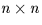

Next: SLA_DMOON - Approx Moon Pos/Vel
Up: SUBPROGRAM SPECIFICATIONS
Previous: SLA_DM2AV - Rotation Matrix to Axial Vector
- ACTION:
- Matrix inversion and solution of simultaneous equations
(double precision).
- CALL:
- CALL sla_DMAT (N, A, Y, D, JF, IW)
- GIVEN:
-
| N |
I |
number of unknowns |
|---|
| A |
D(N,N) |
matrix |
| Y |
D(N) |
vector |
- RETURNED:
-
| A |
D(N,N) |
matrix inverse |
|---|
| Y |
D(N) |
solution |
| D |
D |
determinant |
| JF |
I |
singularity flag: 0=OK |
| IW |
I(N) |
workspace |
- NOTES:
- 1.
- For the set of n simultaneous linear equations in n unknowns:
A y = x
y = x
where:
- A is a non-singular  matrix,
- y is the vector of n unknowns, and
- x is the known vector,
sla_DMAT computes:
- the inverse of matrix A,
- the determinant of matrix A, and
- the vector of n unknowns y.
Argument N is the order n, A (given) is the matrix A,
Y (given) is the vector x and Y (returned)
is the vector y.
The argument A (returned) is the inverse matrix A-1,
and D is det(A).
- 2.
- JF is the singularity flag. If the matrix is non-singular,
JF=0 is returned. If the matrix is singular, JF=-1
and D=0D0 are returned. In the latter case, the contents
of array A on return are undefined.
- 3.
- The algorithm is Gaussian elimination with partial pivoting.
This method is very fast; some much slower algorithms can give
better accuracy, but only by a small factor.
- 4.
- This routine replaces the obsolete sla_DMATRX.
Next: SLA_DMOON - Approx Moon Pos/Vel
Up: SUBPROGRAM SPECIFICATIONS
Previous: SLA_DM2AV - Rotation Matrix to Axial Vector
SLALIB --- Positional Astronomy Library
Starlink User Note 67
P. T. Wallace
12 October 1999
E-mail:ptw@star.rl.ac.uk